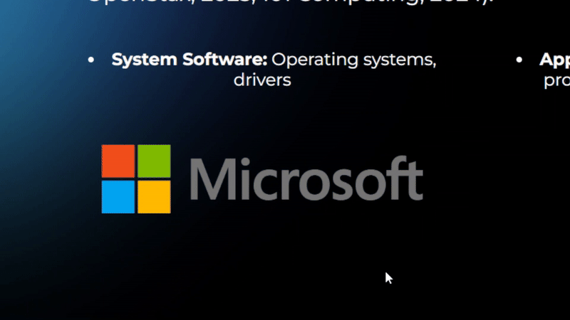
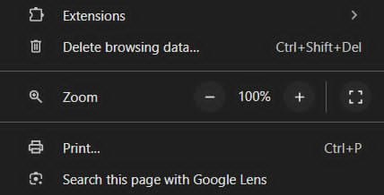
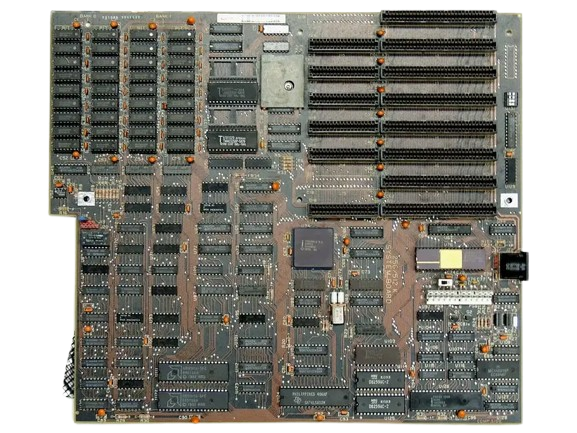
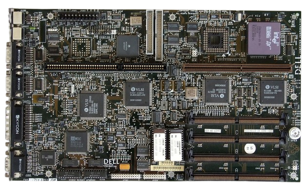
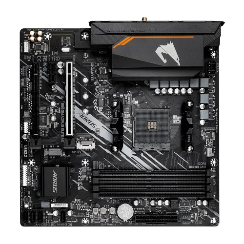
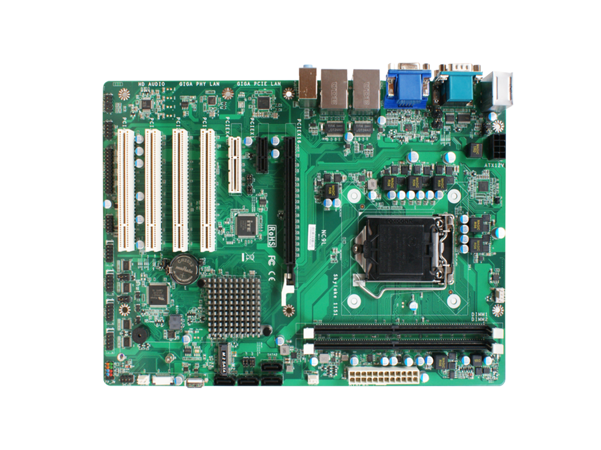
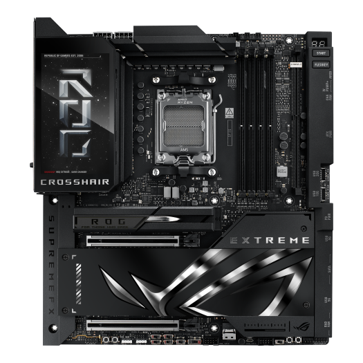

PORTFOLIO #5
Get Started

Best viewed on desktop or large screens (≥1200px) for full layout.

Hover over elements to see them scale up with effects.

Resize the window if content looks squished; smaller screens may not show everything perfectly.
Introduction
The motherboard is the main printed circuit board (PCB) that connects and manages all major computer components such as the CPU, memory, storage, and peripheral interfaces. It determines the compatibility, upgrade potential, and overall performance of a computer system. Over the decades, motherboard design has evolved in size, layout, and functionality to support new technologies and diverse user needs. This study provides a comparative analysis of different types of motherboards, focusing on legacy, mainstream, compact, high-performance models, and BTX variants, highlighting their structure, advantages, and applications.

Legacy Motherboards (AT, LPX)
AT Motherboard
LPX Motherboard
Legacy motherboards include the AT (Advanced Technology) and LPX (Low-Profile eXtension) designs that were dominant during the 1980s and 1990s. The AT motherboard, introduced by IBM, featured large connectors and limited integration, making cable management and installation difficult. LPX boards improved case airflow by using riser cards for horizontal expansion, but their proprietary layout and limited upgrade options caused them to become obsolete (Intel Corporation, 2023). These early designs laid the foundation for modern standards but lacked flexibility, onboard features, and efficient power management.
Mainstream Motherboards (ATX, Micro-ATX, Standard ATX)

Micro-ATX

Standard ATX
The ATX (Advanced Technology eXtended) motherboard, introduced by Intel in 1995, replaced the AT design and remains the most widely adopted standard. It offers integrated I/O ports, improved component placement, and support for multiple RAM and PCIe slots. Micro-ATX and Mini-ATX variants provide more compact options while maintaining compatibility with standard components (Intel Corporation, 2023). ATX motherboards strike an effective balance between cost, size, and expandability, making them ideal for most consumer desktops and office computers.
Compact Motherboards (Mini ITX, Pico BTX)
Mini-ITX, developed by VIA Technologies in 2001, is one of the smallest motherboard standards, measuring only 170 × 170 mm. Despite its small size, it supports modern processors, SSDs, and built-in connectivity such as Wi-Fi and Bluetooth (Wikipedia contributors, n.d.; Circuit Cellar, 2019). These motherboards are commonly used in small form-factor (SFF) builds, home theater PCs, and embedded systems where space efficiency and low power consumption are priorities. However, their limited expansion slots and memory capacity restrict high-end customization.
Mini ITX
Pico BTX
High-Performance Motherboards (Extended ATX)

Extended ATX
The Extended-ATX (E-ATX) motherboard is designed for professional workstations and high-end gaming systems that demand maximum expandability. These boards typically feature dual CPU sockets, numerous DIMM slots for large memory capacities, and multiple PCIe x16 lanes for multi-GPU setups (Intel Corporation, 2023). Enhanced chipset support and superior thermal design make E-ATX motherboards the top choice for heavy computational workloads such as 3D rendering, data science, and server applications.
BTX and Its Variants (BTX, Pico BTX)
Intel introduced the BTX (Balanced Technology eXtended) form factor in the early 2000s to address airflow and thermal inefficiencies present in ATX designs. BTX repositioned components for optimized cooling and airflow paths across the CPU and GPU (PCTechGuide, n.d.; EE Times, n.d.). Variants such as Micro-BTX and Pico-BTX aimed to scale the BTX standard for smaller enclosures, with Pico-BTX supporting one or two expansion slots (AnandTech, n.d.). Despite its technical improvements, BTX failed to gain industry traction due to limited manufacturer adoption and backward-compatibility issues (PCTechGuide, n.d.; EE Times, n.d.).
Comparative Table of Motherboard Form Factors
| Form Factor | Build | CPU Slots | Memory Slots | Chipsets | BIOS | PCI Slots | SATA | Built-in Features |
|---|---|---|---|---|---|---|---|---|
| AT Motherboard | Large (obsolete) | 1 | 2–4 | Limited support | Legacy | Few ISA slots | No SATA (uses PATA) | Basic, no integrated ports |
| ATX Motherboard | Standard desktop/server | 1 | 2–8 | Modern chipset support | UEFI/BIOS | Multiple PCI/PCIe | Yes (SATA 2/3) | USB, LAN, Audio |
| BTX Motherboard | Designed for better airflow | 1 | 2–4 | Mid-range | BIOS/UEFI | PCIe slots | Yes | Improved cooling design |
| Extended-ATX Motherboard | Larger than ATX (high-end workstations) | 2+ | 8–12 | Advanced chipsets | UEFI/BIOS | Multiple PCIe x16 | Yes | Supports dual CPUs, RAID, ECC memory |
| LPX Motherboard | Older slim design | 1 | 2 | Limited | Legacy BIOS | Riser cards used | No | Compact but outdated |
| Micro-ATX Motherboard | Smaller than ATX | 1 | 2–4 | Mainstream | UEFI/BIOS | 2–3 PCIe | Yes | Affordable, compact |
| Mini ITX Motherboard | Very compact (small PCs) | 1 | 2 | Limited | UEFI/BIOS | 1 PCIe | Yes | Energy-efficient, space-saving |
| Mini-ATX Motherboard | Between Micro-ATX & ATX | 1 | 2–4 | Mid-range | BIOS/UEFI | Fewer PCIe | Yes | Balanced size & expandability |
| Pico BTX Motherboard | Smaller BTX variant | 1 | 2 | Limited | BIOS/UEFI | Minimal expansion | Yes | Compact, efficient cooling |
| Standard-ATX Motherboard | Widely used | 1 | 4–8 | High compatibility | UEFI/BIOS | Multiple PCIe | Yes | Best balance of performance & cost |
References
- AnandTech. (n.d.). Three Different BTX Sizes — The Future of Cases & Motherboards.
- Circuit Cellar. (2019). Mini-ITX and Pico-ITX SBCs Pack in Performance.
- EE Times. (n.d.). BTX Computer Motherboard Power Management Solutions.
- Intel Corporation. (2023). Motherboard form factors: ATX, MicroATX, Mini-ITX, and more.
- PCTechGuide. (n.d.). BTX (Balanced Technology eXtended) Motherboard Form Factor.
- Wikipedia contributors. (n.d.). Mini-ITX. In Wikipedia.
ABOUT ME
Hello! I’m a first-year IT student from Block A with a strong interest in programming and web development. This portfolio was originally assigned as a PowerPoint presentation, but I decided to create a website instead so I could practice my skills in HTML and CSS. Building it gave me the chance to apply what I’ve been learning while also showcasing my work in a more interactive way. I enjoy challenging myself with new projects like this and look forward to growing as a developer.


 alfzmercado240@gmail.com
alfzmercado240@gmail.com